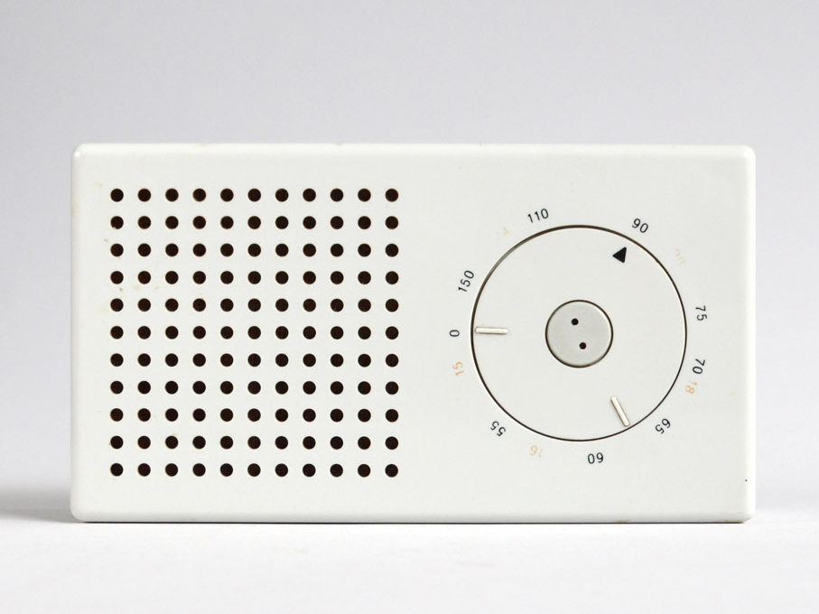
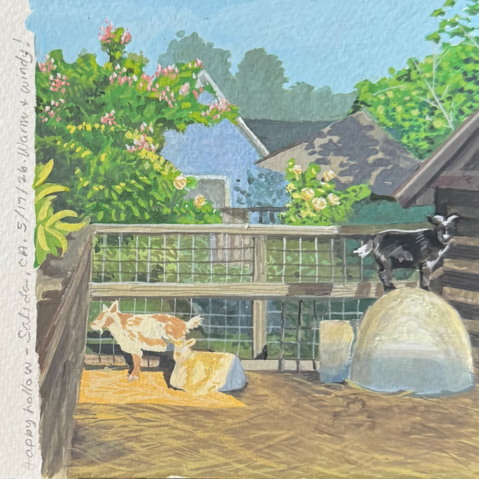
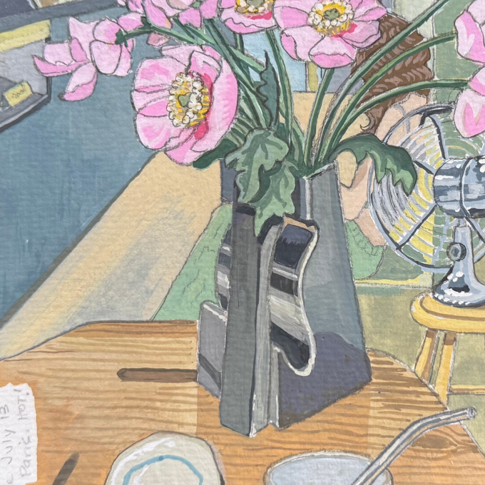
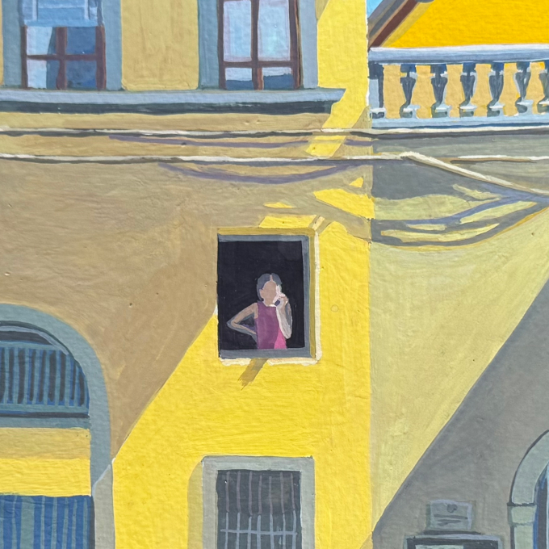

Hi there, I'm Shawna, a systems-oriented design leader who cares deeply about quality, clarity, and execution. With over 20 years experience as both practitioner and leader, I have spent the bulk of my career serving small business customers, most recently as the Director of Design for the Fintech organization at Intuit. I'm most energized when leading, and working alongside a high-performing multi-disciplinary design team. As a leader and partner I'm particularly effective at bringing structure to ambiguity, and translating user needs into business value.
As a leader I embody clarity and kindness held together. I'm direct enough to define and hold a high bar, and human enough to cultivate a community of empowered makers.
Case studies
As a designer I believe Dieter Rams put it best: “good design is as little design as possible.” To me, successful UX means people complete their task effortlessly — without a single unnecessary click.
Case studies“Working with Shawna has taught me so much about the importance of simplification and navigating tough stakeholders while advocating for the right customer problem. I'm a better professional because of her, she has been a strong mentor, reliable leader, and a friend to me.”— Former teammate, Intuit
Things I make to re-charge my creative batteries.

Gouache on paper. Saturday, warm and windy — goats at the petting zoo.
View more
Gouache on paper. July, hot out — peonies on the table.
View more
Gouache on paper. A study in yellow light and a stranger's phone call.
View more